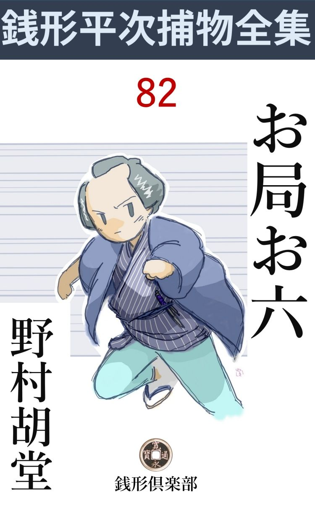
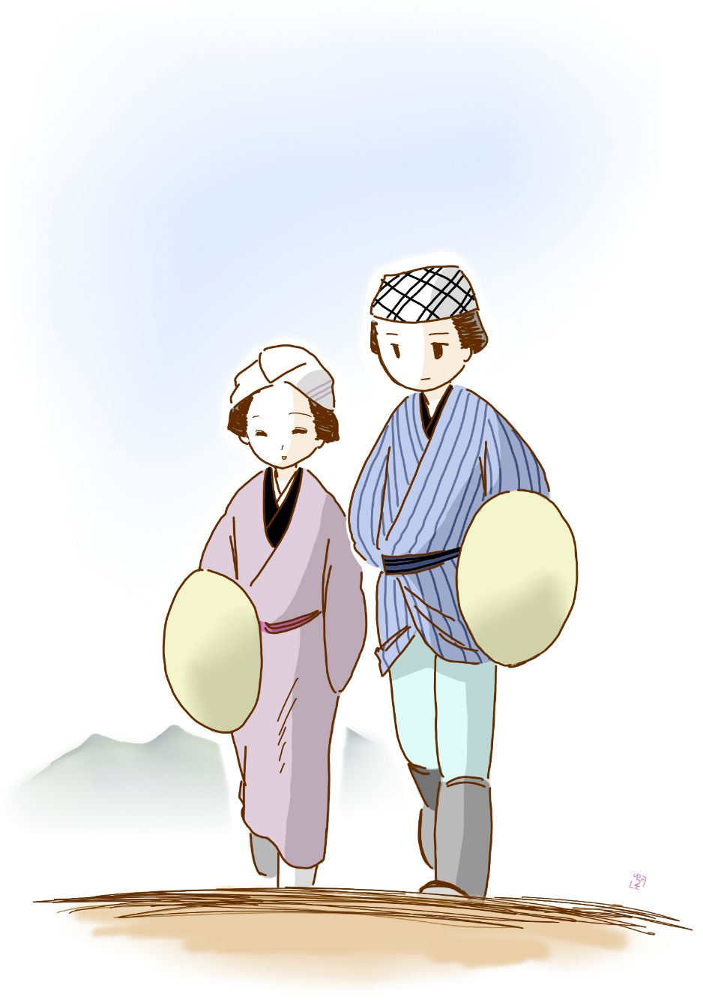

| お局お六: 銭形平次捕物全集第82話 (銭形倶楽部) | |
| 野村胡堂 | |
| ZENIGATA CLUB (2018) | |

一
紅葉 はちょうど見頃、差迫った御用もない折を狙 って、銭形平次は、函 嶺 まで湯治旅と洒落 ました。
十手や捕縄を神田の家にのこして、道中差一本に、着換 の袷 が一枚、出来るだけ野暮な堅気に作った、一人旅の気楽さはまた格別でした。
疲れては乗り、屈託 しては歩き、十二里の長丁場を楽々と征服して、藤沢へあと五六町というところまで来たのは、第一日の申 刻 過ぎ------。
「おや？」
平次はフト立停りました。
道中姿の良い年増が一人、道端の松の根元に、伸びたり縮 んだり、歯を喰いしばって苦しんでいるのです。
「どうなすった、お神さん？」
ツイ傍へ寄って、顔を差覗いた平次。
「お願い、------み、水を------」
斜 に振り上げて、乱れかかる鬢 の毛を、キリキリと噛んだ女の顔は、そのまま歌 舞 伎 芝居 の舞台にせり上げたいほどの艶 やかさでした。
「癪 を起したというのか、------そいつは厄介だが、------待ちな、今、水を持って来てやる。反 っちゃならねえ、どっこい」
平次は女の身体を押付けていた手を離すと、ツイ十五六間先の百姓家へ飛んで行きました。まごまごする娘っ子を叱り飛ばすようにして、茶碗を一つ借りると、庭先の井戸から水を一杯くんで、元の場所へ取って返します。
その忙しい働きのうちに、街道筋はしばらく人足が絶えて、浪人者が二三人、うさん な眼を光らせて通っただけ------。
「おや？」
平次はもう一度目を見張りました。ツイ今しがたまで、松の根方にもがき苦しんでいた、道中姿のいい年増が、何処へ消えて無くなったか、影も形も見えなかったのです。
狐につままれたような心持で、藤沢の宿 に入ると、旅籠だけは思い切り弾 んで、長尾屋長右衛門の表座敷を望んで通して貰いましたが、足を洗って、部屋に通ると、懐中へ手を入れた平次は、
「おやおや、そんなものが望みだったのか、手数のかかる芝居をしたものじゃないか」
思わず苦笑いをしたのも無理はありません。頸 からブラ下げた財 布 が、いつの間にやら、見事に切り取られて居たのです。
「どうなさいました、お客様」
入って来た番頭は、平次の頸にブラブラと下がった紐 に驚いたのでしょう。
「ハッハッハッ、巾着切にやられたよ、江戸者も旅に出ちゃ、から だらしがねえ」
「それは大変じゃございませんか」
腰を浮かす番頭。
「騒ぐほどのことじゃないよ、番頭さん。取られたのは、ほんの小出しの銭が少しばかりさ。まだ小判というものをうんと持っているから、旅籠賃の心配はさせねえ」
平次はそんな事を言ってカラカラと笑いますが、盗られた財布の中味は、正直のところ、路用から湯 治 の雑用を併せて三両二分ばかり、あとに残ったのは、煙草入に女房のお静が入れてくれた、たしなみの小 粒 が三つだけです。
「お役人に申しましょうか」
「いや、それにも及ぶめえよ」
江戸の高名な御用聞、銭形の平次が巾着切にしてやられたとは、さすがに人に知られたくなかったのでしょう。
「左様でございますか、------その御災難の中へ、こんな事を申上げるのは変でございますが、今日は急に御本陣へお行列が入って、宿中 一パイになってしまいました。手前共でも割り切れないほどのお客様で、どうすることも出来ません。御迷惑様でも、相客をお二人ばかりお願い申上げたいのでございますが、如何でございましょう」
番頭は敷居際に坐り込んだまま、一生懸命手を揉 んで居ります。
「いいとも、十畳に一人じゃ勿体 ない。二人でも三人でも、案内して来るがいい」
「では------」
番頭は引込むと、間もなく二人の屈強な武家を案内して来ました。
「------」
平次は危うく声を出すところでした。相客というのは、先刻街道筋で、女 巾着 切 を介抱している時、近々と眺めながら、素知らぬ顔をして通って行った、二人の浪人者に紛 れもなかったのです。
二
「なんだ、町人か」
向う疵 のある、大柄の浪人は、平次を眺め廻しながら、部屋の真ん中にドッカと坐り込みます。
「虫だと思ったら腹も立つまい、我慢をせい」
続くのは小柄な中年男。
「俺はその虫が大嫌いでな。蚤 、虱 、バッタ、カマキリ、百 足 虫 、------虫と名のつくものにろくなものがない」
「目障りだったら、捻 り潰 すだけの事だ。まア湯へ入って一パイやらかそうか」
平次は驚きました。世の中にこんな無法な武家があるものでしょうか。見れば酔ってもいない様子、
『触 らぬ神に祟 りなし』といって、その頃の人に共通の逃 避 的 な心持で、平次は殊勝らしく部屋の隅っこに小さくなったのです。
やがて交る交る風呂に入った二人の浪人者は、一本つけさして、互に献酬 を始めました。平次はその間に部屋を出て、懐紙に帳場硯 でサラサラと何やら認 め、店先に立って宵の街を眺めております。
その頃の街道筋の賑いは、今日想像したようなものではなく、大名の行列だけでも、日に幾つも通ることがあり、上り下りの旅人、諸芸人、武士、僧侶、あらゆる階級の人の間を縫って、諸大名の早 飛脚 や、十一屋の定飛脚などが、夜昼の別なく通って居ります。
平次はそのうちの一人、夜道をかけて江戸へ行く早飛脚を見付けると、たった三つしかない一朱銀のうちの一つを、先刻書いた手紙にクルクルと包んで、飛脚の眼の前にポンと投りました。
「おや？」
思わず立止って、それを拾い上げた飛脚は、クルクルと懐紙をほぐして、店先の灯 に透 しましたが、四方 に投げた人影もないのを見定めると、腹掛の中へポンと落して、サッと平塚の方へ飛びます。
始終の様子を物蔭から見た平次、忍ぶともなく跫音 静かに元の部屋に帰りました。
「足を折るのが一番いい、------血を流すと事面倒だ」
「一人だけ、この宿に踏止まって、役人の方を引受けるつもりなら、少し位は傷を負わせても差支えあるまい」
漏 れて来るのはこんな言葉です。平次はさすがにギョッとしましたが、思い直した様子で、静かに入ります。
「これ町人」
「へエ------」
「出入りには挨拶位するものだぞ。いきなり唐紙 を開ける奴があるか、馬鹿野郎」
「へエ、相済みません」
絡 み付いて来るのを、平次は軽くかわしました。
「飯が済んだら腰の物の手入れをしよう。いざという時、武士の魂が役に立たなくては済まぬ」
「いかにも、それはいいことに気が付いた」
二人は灯 を中にして、ギラリギラリと長いのを引っこ抜きました。
「どうだ、見事だろう。貴公の備前物 は、大層な自慢だが、到底この相州物には敵うまい」
小さい方の武家は一刀をギラリギラリと振り廻しました。
「なんの、刀は体裁や見てくれで切れるものか。本当の切れ味は俺の備前物の方が、どんなに優 れているか判るまい」
「よし、それなら、試し斬りをして見ようか」
「応ッ、望むところだ。が、何を斬るつもりだ。巻 藁 などは嫌だぞ」
「幸い其処に生きたのが居るではないか」」
「成程、手頃な肥 り具合だ。これ、町人」
平次はさすがに胆 を潰しました。長いあいだ御用聞をして居りますが、まだ、こんな無法な人間に逢ったこともありません。
これが旅先でなかったら------、もう一つ、大事な目的 のある旅でなかったら、平次も娑 婆 っ気を出して、二人の浪人者を取りひしいだかも知れません。が、得意の投銭を飛ばすにしても、あと煙草入に小粒が二つこっきりでは、平次の戦闘力は半分になります。
「逃げるか、町人」
「其方はどうにも気に入らないところがある。それへ直れ」
大柄の一人は早くも入口を塞 いで大上段に振り冠り、小柄の一人は、一刀を正眼に、平次のうしろからジリジリと迫ります。
何もかも、平次と見込んでの嫌がらせらしく、何方の気はいを見ても、脅 かしや酔狂でないことは、平次にもよく解ります。
「御免蒙りましょう。あっし は斬られつけないから、そんな遊びの相手にはなりませんよ」
「何をッ」
早くも脇差を腰に、振り分けの荷を右手にさらった平次は、中腰になって、二人の隙 を窺 います。
「こいつは面白い。鳥も飛ばなきゃあ撃 つ張合がないというものだ、逃すな」
「応 ッ、ここは鉄壁だ。蟻一匹這い出させるこっちゃねえ」
前後から迫る刃、平次は相手の深刻な害 意 を読むと、もう躊躇 しませんでした。脇差を引っこ抜いて、武士と渡り合うのを不穏当と思ったか、右手に摑んだ振 分 けの荷、------それを入口を塞いだ大男の股 倉 へパッと抛 ったのです。
「わッ」
不意を食らって、大男は前のめりになりました。咄嗟 の隙に乗じた平次、一気にその頭を飛越して廊下へ------。
「無礼者ッ」
後ろから追う二人の浪人者。旅籠屋中は引っくり返るような騒ぎになりました。
二条の刃 に追い詰められた平次は、しばらく廊下を逃げ廻っておりましたが、どの部屋も必死と内から障子を押えて、平次を入れてくれそうもないのを見ると、浪人者の姿が納戸 の蔭に隠れた機会を掴んで、階段の下の行燈部屋の中へ、パッと飛込んだのでした。
「あッ」
低い小さい声ながら、異常な驚きにかき立てられた女の悲鳴です。行燈部屋と見たのは、混み合った時はやはり客を入れる部屋だったのでしょう。長四畳の灯 は消して、窓から入る月の光りでは、女の素姓もはっきり読めません。
二人の浪人はしばらくその辺 りを探している様子でしたが、最後に平次の隠れた部屋をパッと開けました。
「何だここにも人が居るぞ」
一歩大きな浪人が踏込みます。
「ここは女一人でございます。御無体をなさいません様に」
凜 とした声、------入口に立ち塞 がったのは、異 香 薫 ずるような部屋の主でした。
「何、女一人？」
さすがの無法者も、面食らって引下がりました。
「女一人でも油断はならぬぞ、一応中を見せて貰おうか」
小さい方の浪人は、その背後から警戒の眼を光らせました。
「取乱して居りますが、どうぞ御覧下さい」
女はツト身を引きました。それを追って廊下の灯を背にした四つの眼。
「フーム、居ないぞ」
「外へ飛出したのかも知れぬな」
「逃げ足の早い奴だ」
二人はプンプンとして引揚げます。
三
女はその後姿を見送って、静かに行燈 に灯を入れ、鬢 と襟を直して、押入の戸を開けました。
「もう大丈夫でございます。無法者は行ってしまいました」
「有難い、------飛んだ御迷惑をかけました」
ひょいと押入から出て来た銭形の平次、何心なく行燈の灯の中に、女と顔を見合せて立 竦 みました。
「あッ、お前さんは？」
紛 れもない、夕刻藤沢の宿 の入口で、癪 を起して苦しんでいた女------、水をくんで来るうちに、行方不明になった女------、平次の頸にかけた、財 布 の紐 を切って抜いた女------。
「まア、私は」
女は両の袂 を顔に当てて、身も世もあらぬ様子で畳の上に突っ伏しました。
「お前さんに助けられようとは思わなかった、これはこれは」
「------」
「癪はどうしたえ、------」
平次はようやく落着きを取戻して、萎 れ返った女を観察しました。せいぜい二十二三、町人の女房が江の島詣りに行くといった身軽な風をしておりますが、様子にひどく上品なところがあって、武家の新造、奥方といっても恥かしくないでしょう。
それよりも平次を驚かしたのは、気位の高そうな取済ました底に潜 む、冷美といってもよい不思議な美しさでした。それを見詰めていると、冷たい焔に対して感ずるような、恐ろしい蠱 惑 と懊悩をさえ感じさせるのです。
「親分さん、------済みません。飛んだことをしてしまいました。------私の本意でなかったわけは、親分の懐中物を、私の身に着けていないことでもお解りでしょう。幾らあったかは存じませんが、せめてこれでお許しを願います」
女はそう言って、自分の帯の間から赤い紙入を抜いて、平次の方へ押しやるのでした。絶えも入りたげな面目なさに、長い睫 毛 を伏せたまま------。悪い女もずいぶん大勢見て来た平次にも、ただの巾着切や胡 麻 の蠅 とは思えないいじらしさです。
「お前は唯の悪人らしくもねえが、------悪戯 にしちゃ、少し念が入り過ぎるぜ。一体どうして人様の物に手を掛ける気になったんだ」
「申上げましょう、親分さん」
女は精いっぱいの努力で顔を挙げました。睫 毛 は濡れて、赤い唇が激情にヒクヒクと顫えます。
その物語はかなり長いものでした。が、筋は、------女の名はお六------武家の娘で本当は禄と書くのだが------、少女時代にさらわれて道中胡麻の蝿の手先になり、ついうかうかと娘盛りの二 十 歳 を越してしまったというのです。
尤 も一度は悪者の手を逃れて、江戸番町の親の家に帰りましたが、少女お六が誘 拐 されるとき、父親の鎌井重三郎は人手にかかって非業の死を遂げ、家禄は没収 、母親はそれを苦に病んで父の後を追い、その後を襲 ぐ者もなく、鎌井家は没 落 、お六は再び悪者に引戻され、美貌と器用さを重宝がられて、浮ぶ瀬もなく悪事に沈 淪 していたのです。
「こんなわけで、私は目の前に父親の仇を見ながら、討ち果すこともならず、不本意ながら悪者の手先になって、うかうかと日を過しました。でも、今日という今日、悪い夢の醒 めたような心持が致します。------此上のお願いには親分さん、この私に親の敵を討たせ、重なる罪のお処刑 を、立派に受けさせて下さいませんか、お願いでございます」
「------」
「親分さんのような方に助太刀をして頂いたら、私にも親の敵が討てないこともないでしょう、お願い」
お六の手はツイ伸びて、平次の膝を揺 ぶります。
「巾着切から敵討か。そいつは驚くぜ。まアいい。三幕目は何になろうと、俺の知ったことじゃねえ、------ところで、その敵の名前や顔が解っているのかな」
平次はようやく積極的になりました。
「中国浪人久 留 馬 登之助、------顔に向う疵 のある、三白 眼 の大男、海道筋に響いた無法者でございます」
「あ、あれだ」
「御存じで？ 親分さん」
「ツイ今しがた、抜刀 で俺を追っかけた浪人だ。あれは滅多に間違える人相じゃねえ」
「親分さん、------そうと気が付けば放っては置けません、お願い申します」
包の中から匕首 を取出したお六、平次の止める隙もなく、廊下へパッと飛出しました。その突き詰めた様子や、軽捷 な物腰など、思い付きの芝居とも思われません。
誘 われるともなく、平次も飛出しましたが、その時は、もう二人の浪人は旅籠屋に難 癖 をつけて、何処ともなく立去った後でした。
四
翌る日の朝は、運悪くドシャ降り、早立ちは駄目になりましたが、まもなく素晴らしい秋 日 和 になって、上り下りの旅人は、一ぺんに旅籠屋から流れ出しました。
伊勢詣り、湯治客、国侍、飛脚 馬 ------などといっしょに平次とお六もこの上もない長閑 な旅を続けたのです。
お六は女巾着切に似ぬ教養のある女で、平次もときどき受け応えに困ることがありました。武家育ちというだけに、諸芸、歌、俳 諧 にまでたしなみがあるらしく、次から次へと、話の種は尽きません。

小田原へ着いたのはちょうど六つ少し前、飛脚馬も、伊勢詣りも、武家も町人も、大抵 はそこで泊りました。函 嶺 までは四里八町、夜道には少し遠過ぎます。
平次とお六が泊ったのは、とら屋三四郎。晩酌 を一本つけて、さて、話が枝がさし葉が繁 ります。番頭は夫婦と見たか、駈 落 者 と見たか、ひどく心得て同じ部屋に泊めるつもりなのを、
「そいつは困るぜ、二人はただの道伴れだ」
平次は野暮 なことを言って大きく手を振ります。
「まア、親分さん、------」
お六は何時までも離れともない風情でした。が、さすがに打ちあけてそう言い兼ねたものか、モジモジしながら自分の部屋に引下がります。
「誰だい、入口の漆喰壁 へ、消炭なんかででっかい円と四角を描いたのは？」
帳場の方でそんな声がしました。多勢の雇人達が、いろいろ評議をしている様子ですが、結局誰の悪戯 とも解りません。
暫らく経ちました。
平次は手水 場 から帰って来て、さて寝ようとすると、
「親分さん」
そっと廊下の外から声を掛ける者があります。柔 かな匂うような声。
「お六さんかい」
「お願いがありますが、入って構いませんか」
「いいとも、まだ寝たわけじゃねえ」
「では」
滑るように入って来たお六、寝巻姿に、少し取乱して居りますが、何か異常な緊張に、ワクワクして居る様子です。
「どうしたんだ、お六さん」
「親分さん、------お約束を守って下さるでしょうね」
「約束？」
「敵、久留馬登之助の所在 がわかりました。今夜、今すぐ名乗りかけて討ちたいと思いますが------」
お六は華奢 な肩を落して、怨 ずる姿に平次を見上げます。
「そいつは早速で面食らわせるぜ。何処に居るんだ、その敵役は？」
「先刻、この旅籠屋の入口で、番頭と話して居るのを二階の窓から聞きました、------親分が泊っていらっしゃると聞いて、夜道をかけて函嶺へ登ったようで------」
「へエ------、昨夜 はあんなに俺を追い廻して、今晩は向うが逃げ廻るのかい」
「親分さんが敵討の助太刀をすると気が付いたので御座いましょう」
「今晩は御免蒙 ろうよ、お六さん」
平次は没 義 道 にクルリと背を見せました。
「でも、親分さん、あんなに堅くお約束をした筈ではございませんか」
「俺は約束をしたような覚えはねえよ。お六さんが自分の心持で一人極めにしたんじゃないか」
「でも」
敷居に崩折れるように、お六の怨 じた眼は妖 艶 を極めます。
「それに、俺は夜の仇討が大嫌いさ。同じ事なら、竹矢来を組んでよ、検 視 の役人附添の上、ドンドンと太鼓を叩いて、揚幕から静 んず静んずと出てみたいやな。鎖帷子 に身を固めて、大ダンビラを肩でしごくと、後ろから真っ赤な朝日が出る、------皆んな極った型のあるものだ」
平次はすっかり茶かし気味です。
「親分さん、本当に真剣に聞いて下さい。久留馬登之助の隠れ家は、湯元から山道を入って、ほんの五六町のところにあります。今晩は其処に泊るに違いありません。親分さんと二人押し掛けて名乗りをあげたら、万に一つも取逃がすようなことはないでしょう」
「------」
「此処からほんの一里半足らず、敵を討っても夜 中 までには帰って来られます」
「帰って来る？」
「小田原へ帰ろうと、そのまま函嶺を越そうと、親分さんのお心持次第になります」
お六は本当になやましそうでした。何処までも茶かし気味な平次の顔を見上げて、とうとう涙さえ流しているのです。
「成程、そう聞けばわけのないことだ、夜中 前に帰って来るということにして、出かけてみようか」
「親分さん」
お六は本当に嬉しそうでした。平次がもう少し甘い顔をしたら、飛付いて手ぐらいは取った事でしょう。
二人は銘々 に支度をして、そっと旅籠屋を抜出したのは、それから間もなく、闇の小田原街道を、手に手を取るような心持で、函 嶺 の三枚橋を渡りました。
「ここから少し道が悪くなります」
お六の注意までもなく、途は本街道をはるかに外れて、次第に狭 く、次第に険 しくなりました。
「親分さん」
崖 や岩に攀 上 るとき、お六は決って下から手を差伸べ、少し甘い調子で救いを求めます。
「------」
平次はときどき舌打をしながら、それでも、心せく様子で、グイと引揚げてやりました。
「まア、何て、邪慳 なんでしょう」
「邪慳なのは生れ付きさ」
そう言う平次へ、お六は時々物に怯 えたように飛付いたりしながら、何うやらこうやら目的地に着きました。
「此処------親分さん」
お六は囁きながら、山の盆地を指さしました。林に三方を囲まれて、厳重そうな山小屋が一つ、------中には灯も何にも見えません。
「誰も居る様子はないじゃないか」
「久留馬登之助は何処 かへ廻ったのでしょう。いずれここへ来るに違いありません。入って待って居ましょう」
お六は何の恐れ気もなく、山小屋の中に入りました。続く平次。
「恐ろしく暗いんだな」
「灯をつけるわけに参りません。しばらく此処で待って下さい」
「------」
平次は高を括 った心持で、小屋の中にドッカと坐りました。
「ね、親分さん、首尾よく敵討がすんだら、私を江戸へおつれ下さるでしょうね、------足を洗って、今度こそは堅気になりますが------」
「お六さん、それは誰に言って居ることか、お前さん知っているのかい」
「------」
「この俺が誰だか、知って居なさるのかと訊いて居るんだよ」
「------」
「お前は、物腰が上品だからと言うので、お局 のお六といわれた、名題の女道中師だろう。今まで積んだ悪 業 の数々、それが、砂 文 字 を消すように、綺麗になると思って居るのかい」
平次はとうとう、言うべきことを言ってしまったのでした。
「では、私も申します、------銭形の平次親分さん」
「え？」
「それ位のことを知らずに、大それたこんな芝居は打てるでしょうか、------私はいかにもお局 のお六に相違ございません。------でも、今晩小田原の旅籠屋にいらっしゃれば、銭形の親分は、間違いもなく殺されなすった筈ですよ」
「------」
「仲間は正亥 刻 半 を合図に五人で斬り込む筈、それがいけなければ、鉄砲くらいは持出し兼ねません。今頃は親分の姿が見えなくなって、さぞ大騒動をしていることでしょう」
「そいつは本当か」
「今さら駈引をいう私ではございません。そのうちに、仲間が私の足 跡 を嗅 いで、ここへ来ると事面倒になります。私は一と走り、方角を外 れさして来ましょう。ここを動いてはなりません、親分」
お六は命令する調子で言うと、
「待った」
平次の声を耳にもかけず、ヒラリと山道の闇の中に姿を隠しました。
五
「親分」
女はそっと小屋の中へ滑り込みました。あれから小半刻も経ったでしょう。
「------」
平次は暗がりの中に、腕を組んだまま、木像のように黙りこくって居ります。
「親分さん、------大変なことになりましたよ」
お局のお六の声が、激情に弾 みます。狭 い小屋の中は、この女一人を入れただけで、近々と体温を感ずるよう。
「------」
が、平次は相変らず黙りこくったまま、壁の方を向いて、プツリとも音をあげません。
「親分、まさか座禅 じゃないでしょうね。返事くらいはして下すったら------？」
「------」
「でも黙って聞いて貰った方が、言いいいかも知れない。幸い顔も見えないし」
「------」
「親分さんが、何の用事で函 嶺 へ来たか、それはよく解って居ますよ、------大公儀から、駿 府 へ送る御用金が六千両、二千両の箱が三つ、馬に積んで、井上玄蕃様が宰領 をして、わざと大 袈 裟 な守護はつけず、銭形の平次親分がたった一人、御 鑑定 に叶 って、函嶺の関所を越すまで、蔭 ながら守護して来るという話は、海道筋を縄張りにしている、私達の耳に入らずにいる筈はない------」
「------」
お六は大変なことを言い始めました。
「井上玄蕃様は木偶 も同様、あとは馬子と青侍が二人だけ、銭形の親分の目さえ光らなきゃ、六千両は此方のものと、計略 は前々から、練りに練られました。最初に親分の懐 を抜く役目を引受けたのはこの私」
「------」
「仮病 をつかって、首尾よく親分の懐中は抜きましたが、路用がまだ残って居るとは気が付きません。その晩は、久留馬登之助ともう一人の仲間が、親分に喧嘩を吹かけ、手足を折るか、浅傷 を負わせるか、ともかく、旅を続けられないようにする筈でしたが、親分が相手にならなかったので、それも駄目」
「------」
「私の部屋に逃げ込んだのを幸 い、道づれになって、親分の気を外 らせようとしましたが、親分の目は一刻半刻も、六千両の荷から離れることではございません」
「------」
「仲間の者はジレ込んで、いよいよ親分を殺すことに決めました、------手引はこの私と、手筈まで調った時、私は、何うしたことか、親分を殺すのがイヤになったのでございます。親分も殺さず、六千両も無事に奪い取ったら、科 は宰領の井上玄蕃が一人で背 負 いこむ筈------と、仲間の者に隠れて親分をそっとここへ誘 い込みました」
「------」
不思議な悩ましさに、お六の言葉はしばらく絶えます。平次も救い、仲間にも反かず、六千両も首尾よく奪い取る細工が、どんなに女らしく、陰険に、緻 密 に運ばれたことでしょう。
「でも、仲間の者は私の裏切に気が付きました。総勢十五人、そのうち三四人は、間もなくここに向って来ることでしょう」
「------」
「親分さん------逃げて下さい------と申上げたいけれど、私はその気になれない。それに、------今頃はもう山の中の何処かで、六千両は仲間の手に奪い取られた筈。このまま江戸へ帰られる銭形の親分さんではないでしょう------」
「------」
平次の頭は、闇の中に強く動きました。
「いえいえ嘘 じゃございません。親分が小田原の旅籠屋を逃げたと知ると、仲間の者が駿府の使に化けて、小田原に向い、明日早朝、関所手前で、御用金を受取りたい、夜中御苦労ながら、その手配を付けるように------と申込まれ、井上玄蕃は銭形の親分の留守中も構 わず、六千両の金を馬につけて、ツイ今しがた函嶺の山道へかかった筈------」
「------」
平次の首はまた激しく動きます。
「さア、親分さん、一緒にここを立ち退 きましょう。親分は江戸へ帰られず、私は仲間のところへ帰られないとなると、二人の行先は京大阪の外にはありません」
お六は執拗 に絡 み付いて、その手は黙然として壁の方を向く平次の肩に掛りました。
「馬鹿ッ」
平次はすっくと立上がりました。その弾 みに、長大な身体が小窓のところまで伸びると、隙間漏る月の光が、ちょうどその顔のところを照したのです。
「あッ」
平次と思いきや、何時の間に入れ替ったか、それは大きな馬顔。
「馬鹿ッ、何という女だい」
言うまでもなく、銭形平次の子分、ガラッ八の八五郎でなくて誰であるものでしょう。
「お前は、お前は？」
「よく覚えて置け。銭形親分の右の片腕といわれた、小判形の八五郎だ、------親分が何時までこんなところにマゴマゴして居るものか」
「えッ」
「ざまア、見やがれッ」
ガラッ八は小屋の入口から外へパッと飛出そうとしましたが、いけません。小屋は全部外から鎖 した上、入口の------今お六の入った締 は、闇に馴れないガラッ八の眼ではどうしても捜せなかったのです。
そのうちに、パチパチパチと物のはぜる音がして、夜風が一陣の煙をサッと室の中に吹込みます。
「まア、悪かったわねえ、でも、銭形の子分なら、満更諦 められない事はない、観念して私と一緒に焼け死んでおくれ」
「野郎ッ」
「海道一の良い女と焼け死ねば、お前も本望じゃないか。諦めて、丸焼になっておくれよ。銭形の親分が私といっしょに逃げる気にならなきゃ、どうせ一緒に焼け死ぬ筈だったんだから」
「------」
ガラッ八はもうその毒舌に取合いませんでした。そのうちに駆け付けた悪者の仲間が二人、三人、小屋の中に裏切ったお六と、銭形平次が居るものと早合点して、どっと喊 声 をあげながら、小屋の四方に薪 を添 えます。
「お前はずいぶん変な顔だねえ」
「勝手にしやがれ」
小屋の一角を焼き抜いて、カッと燃え立つ焔。
「可哀想で助けるんじゃない、お前と心中するのが役不足だから助けて上げる、------さア、私の気の変らないうちに、其処から出て、仲間の眼を免 れることが出来たら、本街道を畑 宿 の方へ行くがよい」
「------」
お六はそう言いながら、ガラッ八をかきのけて、隠 し掛金を外したのです。
「親分の平次に逢ったらそう言っておくれ、男に心引かれたことのないお局 のお六が、岡っ引に癪 の介抱をして貰ったばかりに、火の中で死んでしまった------と」
「------」
カッとまた一角を燃え崩 して、焔は怒濤 の如く小屋の中へ------。
「御用面 をしたって、この私は縛れないよ。さア帰っておくれ、お前なんかとは一緒に死んでやらないから」
どっと尻火を切った中に、観念 の眼 を閉じたお六の姿、八五郎はさすがにその手を取って引っかつぐ気力もありませんでした。
お六の開けてくれた入口から、転 がるように外へ出ると、
「それッ、逃がすなッ」
飛付いて来たのは三人の悪者、------幸い大した腕でなかったと見えて、八五郎の死物狂いの襲撃に驚いて、パッと三方に散りました。
「手前達は後で縛ってやる、凝 っとして待って居やがれ」
岩も藪も一足飛に------焔の中のお六に心引かれながら、密林の闇に飛込んでしまいました。
六
かくある可 しと期待した平次は、ガラッ八を山小屋に置いて、三枚橋のあたりに網を張って待ちました。
間もなくやって来たのは井上玄蕃 と、御用金六千両を積んだ馬と、馬子と、青侍が二人、------函嶺の関所さえ越せば、あとは駿 府 から数十人の警護の者が来ていると聞いて、喜び勇んで函嶺の山道へかかったのです。
平次は舌打を一つして、見え隠れにその後に従いました。あれほど厳重に注意して置いても、平次の姿が見えなくなると、『何を岡っ引め』で、すぐこんな勝手な行動をする、井上玄蕃の頭の悪さに愛想が尽きたのです。
やがて畑宿を越して、双子山 の麓 を廻ったのは、真夜中過ぎ。函嶺の山道でも、この辺は一番淋しいところですが、あと一と丁場で関所と思うせいか、馬子も青侍も、大した警戒をする様子はありません。
暫らくすると、麓近い密林の中に、ボーッと焔があがります。
------やったな------
平次はさすがにギョッとしましたが、今さら引返すわけにも行きません。
甘酒茶屋までもう一と息という頃。
近々と梟 が鳴きました。
「おや？」
馬を停めた井上玄蕃 は、藪 の中から出た、釘 抜 のような手に足を掴まれて、あっと言う間もなく引落されました。
「それッ、曲者ッ」
「油断すなッ」
二人の青侍が一刀を抜く間もありません。何処から飛出したか、黒装束 が七八人、三方から取囲んで、水も漏らさじと詰め寄るのです。
「一人も生かしちゃならねえ、口がうるさい」
頭立 ったのが号令すると、七八本の刃 が、折から昇った月の光を受けて、三方からサッと殺到するのでした。
「えッ、そんな勝手なことをさせてなるものか、平次が相手だ、来いッ」
不意に、御用金を積んだ馬の側に、スックと立上がったものがあります。
「何？ 平次、いい相手だ」
バラバラと乱れ打つ刃 、平次はそれをどう掻 い潜ったか、半分は同士討をさせて、
「此処だ、馬鹿奴ッ」
拳 を挙げると、平次の手から、函嶺名物の焼け石が乱れ飛びます。
それに勢 を得て、二人の青侍も、必死の刃をかけ並べ、馬の三方を守って、激しく切り合いました。
が、多勢に無勢、しばらくの後、井上玄蕃 は生捕られ、二人の青侍も薄傷 を負った様子、手馴れた銭を投げられないので、平次の武力も思うに任せません。
最早これまで------、勝敗の数は定まりました。
畑宿へ一里、関所へ一里、真夜中過ぎの往来はピタリと絶えて、救いの道の全くあろうとも思えぬところへ、
「御用ッ、御用ッ、御用だぞッ」
函嶺全山を揺 がすほどの声がして、ガラッ八の八五郎、疾 風 の如く飛んで来たのです。
「お、八か」
さすがにホッとした平次。
「俺が来さえすりゃ百人力だ、------親分。小田原のお役人が、千人ばかり畑宿をくり出しましたぜ」
八五郎の宣伝力の偉大さ。
「助太刀なんか要るものか、銭さえありゃ俺一人で片附けてやるが、藤沢で掏られて空っ尻だ。八、------穴のあいたのがあったら少し貸せ」
と平次。
「有難てえ、親分に金を貸すのは生れて始めてだ。大判や小判はねえが、穴のあいたのならうんとあるぜ」
懐から取出した大 かい財布 、寛永 通宝 が五六百枚も入って居るのを受取ると、平次はすっかり有頂天になりました。
「有難てえ、これさえありゃ」
手に従 って飛ぶ投げ銭、悪者達は鼻を叩かれ、頬を削 られ、中には眼をやられ、拳 を痛められて、ドッと崩れ立ちます。
相手の気勢さえ挫 けば、八五郎の馬鹿力は最も有効 に働きます。二人の青侍と力を併 せて、瞬 くうちに生捕った曲者が、二人、三人、五人、------折から関所の方にあがる喊 の声。助勢の人数と見て、残る曲者は、パッと蜘 蛛 の子を散らしてしまいました。
それを見送って、
「八、有難てえ、お前のお蔭だ」
平次は思わず八五郎の手を取りました。
「親分、あの小屋の中で、女は焼 死 にましたぜ」
純情家の八五郎は、まだそれを考えて居たのですが、さすがに憚 かって、これ以上の事は言えません。
× ×
六千両の御用金は、その日の朝、関所で駿府 の使に引渡し、平次とガラッ八はホッとして江戸へ帰りました。
「よく間に合ってくれたね、八」
つくづく言う平次。
「飛脚 が気をきかしてくれたんですよ。親分の手紙を見ると、早 駕 籠 で、夜昼おっ通しに飛んで来たが、あんまり急いで、小田原の旅籠屋の目印 を見落すところでしたよ」
「白壁 に消炭 で描いた丸に四角、あれを銭形と気のつくのは、広い世界にもお前だけさ」
平次は会心の笑みを漏しました。
「でも、あの女は可哀想でしたよ。ちょっと焼跡に寄って、念仏でも称 えて行きましょうか」
「鬼の念仏だろう」
何にも知らない平次は、まだ洒落 を言って居ります。朝陽にカッと照らされる函嶺の紅葉 ------その色に酔うような心持で、二人は麓へと急ぎました。
（編注）
作品中には、身体の障害や人権にかかわる、差別的な語句や表現が見られますが、本書が成立した当時の時代背景等が現代とは異なる古典的な文学作品でもあり、著者が故人でもありますので、底本のままとしました。ご理解、ご諒承のほどをお願い申し上げます。
著者---野村胡堂
挿絵---萩 柚月 © 2017
初出---「オール讀物」昭和十三年十一月号 文藝春秋社
底本---「錢形平次捕物全集」第四巻 河出書房 昭和三十一年六月三十日初版
編集・発行 銭形倶楽部